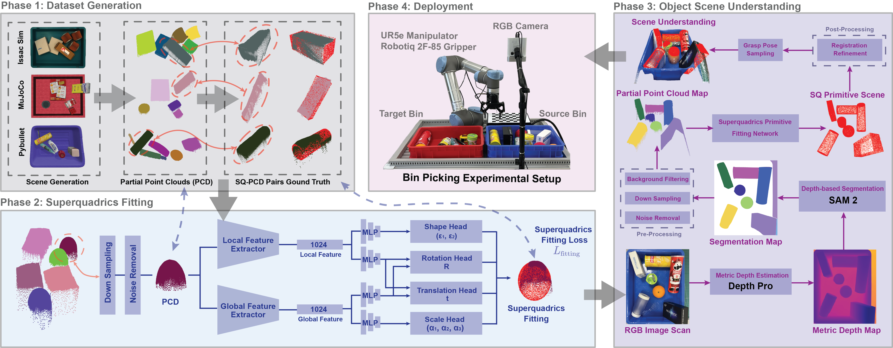
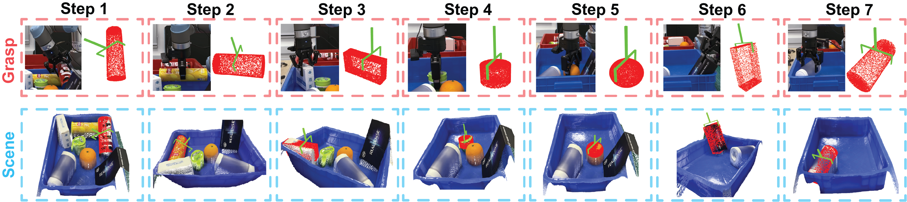

Overview of the RGBSQGrasp framework. (1) Dataset generation using cross-platform simulators to create partial point clouds and superquadric ground truth pairs, (2) Superquadric fitting network with local and global feature extraction, (3) Object scene understanding using RGB image scan, depth estimation, and superquadric primitive fitting, and (4) Deployment in a real bin-picking experimental setup with a UR5e manipulator and RGB camera for grasp pose execution.

Illustration of a sequential rollout of the superquadrics-guided robotic grasping process. The red point cloud represents the superquadric fitting for each partial point cloud, while the green vector denotes the grasp sampled from the fitted superquadrics. The top row visualizes the grasping sequence, and the bottom row depicts the evolving scene state after each step.